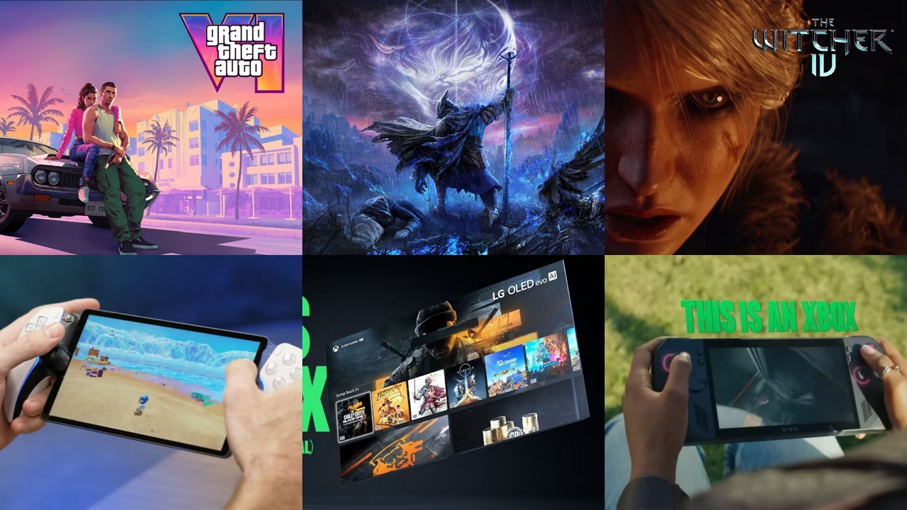

Os Jogos Mais Esperados de 2025
Postado em 10 de janeiro de 2025

Com grandes franquias retornando e novas propostas inovadoras, 2025
promete ser um ano incrível para os gamers. Veja a lista dos
lançamentos mais aguardados e descubra o que vem por aí nos consoles
e PCs.
Leia mais
Realidade Virtual nos Games: Experiência Imersiva em Alta
Postado em 15 de fevereiro de 2025
A realidade virtual está ganhando espaço no mundo dos jogos, com
títulos que oferecem imersão total e interação em tempo real.
Entenda como essa tecnologia está revolucionando a forma de jogar.
Leia mais